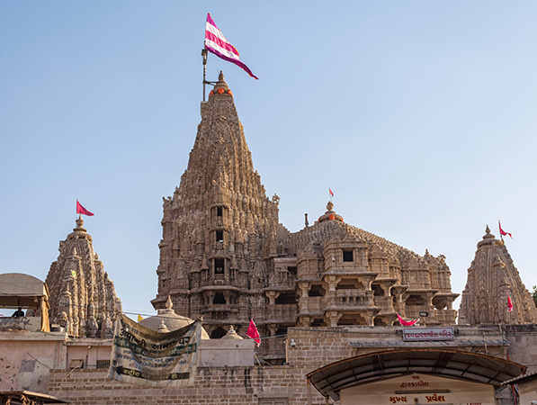

 The Dwarkadhish temple , also known as the Jagat Mandir and occasionally spelled Dwarakadheesh , is a Hindu temple dedicated to god Krishna, who is worshiped here by the name Dwarkadhish, or 'King of Dwarka'. The temple is located at Dwarka, Gujarat, India, one of the destinations of Char Dham, a Hindu pilgrimage circuit. The main shrine of the five storied building, supported by 72 pillars, is known as Jagat Mandir or Nija Mandir, archaeological findings suggest it to be 2,000 - 2,200 years old. The temple was enlarged in the 15th- 16th century. The Dwarkadhish Temple is a Pushtimarg temple, hence it follows the guidelines and rituals created by Vallabhacharya and Vitheleshnath.
According to tradition, the original temple was believed to have been built by Krishna's grandson, Vajranabha, over the hari-griha (Krishna's residential place). The original structure was destroyed by Mahmud Begada in 1472, and subsequently rebuilt in the 15th-16th century. The temple became part of the Char Dham pilgrimage considered sacred by Hindus in India. Adi Shankaracharya, the 8th century Hindu theologian and philosopher, visited the shrine. The other three being comprising Rameswaram, Badrinath and Puri. Even today a memorial within the temple is dedicated to his visit. Dwarakadheesh is the 98th Divya Desam of Vishnu on the subcontinent, glorified in the Divya Prabandha sacred texts. it was rebuilt by Raja Jagat Singh Rathore. The temple is at an elevation of 12.19 metres (40.0 ft) above mean sea-level. It faces west. The temple layout consists of a garbhagriha (Nijamandira or Harigraha) and an antarala (an antechamber). It is conjectured that this temple location is 2,500 years old where Krishna had built his city and a temple. However, the existing temple is dated to 16th century.
As per Hindu legend, Dwarka was built on a piece of land by Krishna that was reclaimed from the sea. Sage Durvasa once
visited Krishna and his wife Rukmini. The sage wished that the pair took him to their palace. The pair readily agreed
and started walking with the sage to their palace. After some distance, Rukmini got tired and she requested some water
from Krishna. Krishna dug a mythical hole that brought in river Ganga to the place. Sage Durvasa was furious and cursed
Rukmini to remain in the place. The temple where Rukmini's shrine is found, is believed to the place where she stood.